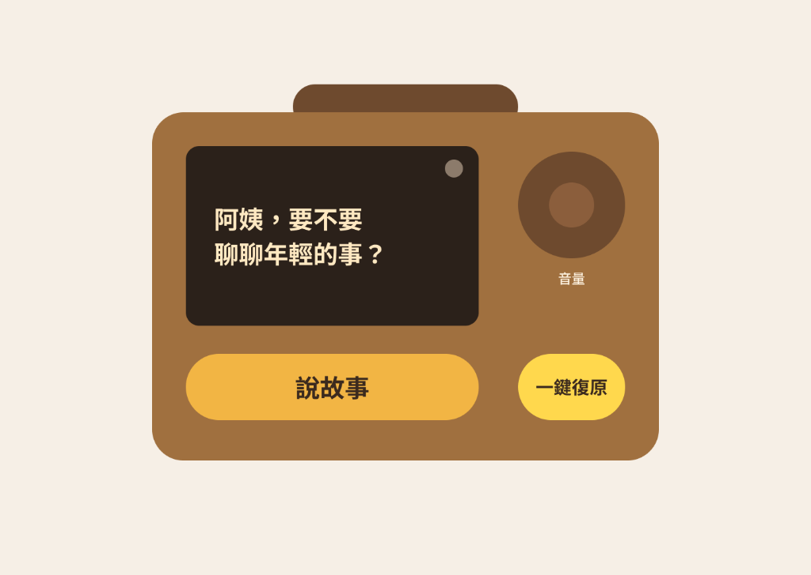

【作業一】未來社會需求導向之智慧 AI 系統功能
與人機互動介面設計需求調查報告
專案名稱：MemoryEcho（記憶迴響）—— 獨居長者跨世代生命故事共創與智慧陪伴系統
📻 智慧人機互動高保真實體原型展示
依據 Figma 視覺規範與 PDF HCI 規格實作之多模態具身收音機 (Embodied Radio) 與青年端 App 閉環雙軌
💡 HCI 規格解析與實證脈絡
【旅程階段 1：觸發陪伴】系統排程於午後 15:00 偵測長者活動，收音機發出溫柔黃光並用語音詢問：「阿姨，要不要聊聊年輕的事？」，打破午後深層寂寞與安靜鐘擺聲。
🧭 表 3：跨世代生命故事共創四階段旅程模擬 (點擊切換階段)
點擊步驟按鍵，收音機將即時切換介面文字、燈光與雙向閉環反饋
Figma 狀態 1：待機/主動問候畫面 (「阿姨，要不要聊聊年輕的事？」)
Figma 狀態 2：聆聽中與綠色信心燈 (「正在聆聽…「1970 年代，大稻埕…」」)
一、執行摘要 (Abstract)
Page 2本報告針對超高齡社會下獨居長者高發之孤獨感、社交隔離、代溝斷層與生命經驗流失等重大社會痛點，提出「MemoryEcho（記憶迴響）」——獨居長者跨世代生命故事共創與智慧陪伴系統。本研究嚴格遵照 HCI 實證方法論，運用深度訪談（In-depth Interview）與脈絡訪談（Contextual Inquiry）收集 10 位目標用戶（6 位獨居長者與 4 位青年世代家屬）之質性資料，精準描繪高齡與青年雙軌 Persona 與同理地圖（Empathy Map），並劃分四階段用戶旅程圖（User Journey Map）。
在系統設計規格上，MemoryEcho 創新地導入混合主動（Mixed-Initiative）互動策略與多模態具身介面（Multimodal Embodied UI），結合復古木質收音機造型裝置與觸控 UI，打造低認知負荷的互動體驗。針對 AI 盲信與科技焦慮，本專案建構多層次可解釋性 AI（XAI）機制（包含『記憶比對信心燈』與『故事畫面生成溯源卡』），並設計溫和的對話修復（Dialogue Repair）與人類接管（Human-in-the-Loop）備援機制。本報告為後續高保真原型開發與實體試驗奠定嚴謹且具社會價值的基礎。
二、問題陳述與背景 (Problem Statement & Background)
Page 21. 未來社會真實痛點 (Societal Pain Points)
隨著 2025 年台灣正式邁入超高齡社會（65 歲以上人口超過 20%），高齡獨居家庭戶數急遽上升。獨居長者長期面臨三個深層社交與心理痛點：
2. 現有 AI 技術現況與缺口分析 (Gaps in Existing AI Systems)
目前市場上的語音助理（如 Siri、Alexa）與通用對話式 AI 存在顯著的 HCI 互動缺口：
三、目標用戶與脈絡研究 (User & Context Research)
Page 3 - 41. 實證需求蒐集方法論 (Empirical HCI Research Methods)
本專案拒絕空想，嚴格運用兩種 HCI 實證研究方法進行需求探勘：
- 深度訪談法（In-depth Interview）：訪問 6 位 65 歲以上獨居長者與 4 位青年世代家屬（合計 10 位），探討日常孤獨時段、回憶觸發情境、對智慧裝置的信任度，以及青年端的跨世代溝通瓶頸。
- 脈絡訪談法（Contextual Inquiry）：實地走訪 3 位獨居長者居住空間，在真實居家脈絡中觀察長者翻閱舊相簿、收聽廣播、操縱電視遙控器及手機 LINE 之真實肢體動作與挫折點。
2. 代表性 Persona 描繪 (Target Personas)
透過雙軌調研分析，建構長者端主要 Persona 與青年端次要 Persona：
| 維度 | 主要 Persona（長者端） | 次要 Persona（青年端） |
|---|---|---|
| 代表姓名與基本背景 | 林秀英女士（72 歲，退休國小教師） 獨居於台北老公寓，老伴去世多年，子孫外移工作。 |
陳家豪（24 歲，研究所學生） 秀英女士的外孫，課業繁重，居住於異地宿舍。 |
| 核心動機與期望 | 渴望獲得日常溫暖傾聽；希望將年輕時的生命記憶與老照片整理成冊傳承給孫輩。 | 關心外婆身體，希望能有輕鬆、碎片化的方式了解外婆過往，促進世代對話。 |
| 行為模式與痛點 | 習慣把電視聲音開很大消解寂寞；想念孫子但怕打擾；對複雜智慧手機 App 感到焦慮與排斥。 | 每週打一次電話，但常因缺乏共同話題而迅速尷尬結束；偏好視覺化與影音資訊。 |
| HCI 介面偏好 | 偏好實體按鈕、溫潤質感、大字體高對比螢幕，以及自然語音對話。 | 偏好手機 App 限時動態、精美圖卡推播與一鍵語音點讚回饋。 |
3. 同理地圖 (Empathy Map)
針對目標長者林秀英女士之真實訪談質性資料進行四象限結構化分析：
- 「現在年輕人講的網路用語我都聽不懂」
- 「以前大稻埕故事很多，但講給年輕人聽他們大概覺得無聊吧」
- 「這台機器叫什麼名字？它會不會偷偷把家裡話傳出去？」
- 「我是不是變成了子孫的負擔？」
- 「有時候家裡安靜到只聽見鐘擺聲，真希望有人能陪我講說話」
- 「如果能把我年輕時教書的故事記下來該有多好。」
- 反覆翻看發黃的舊相簿；
- 午後把客廳電視開著當背景音消解寂寞；
- 在 LINE 上傳送簡單的長輩貼圖，但不敢主動打電話。
- 孤獨感與無力感：身處高齡獨居環境的深層寂寞；
- 科技焦慮：害怕按錯按鈕壞掉；
- 渴望被重視：希望生命經驗仍具社會與家庭價值。
4. 用戶旅程圖 (User Journey Map)
劃分四階段用戶旅程，定義長者行為與情緒、AI 系統介入時機與雙軌 HCI 觸點：
| 旅程階段 | 使用者行為與情緒 | AI 系統介入點 (Trigger & AI Action) | HCI 介面觸點 (Touchpoints) |
|---|---|---|---|
| 1. 觸發陪伴 (Trigger) |
長者午後獨自坐在客廳，感到有些寂寞與無聊。 情緒：平淡/輕微孤獨 |
混合主動問候：系統排程於午後 15:00 偵測長者活動，收音機發出溫柔黃光並用語音詢問：「阿姨，要不要聊聊年輕的事？」 | 復古木質收音機、溫暖呼吸燈、實體『陪伴』大按鈕。 |
| 2. 生命敘事 (Storytelling) |
長者按壓按鈕，開始口述 1970 年代在大稻埕的過往故事。 情緒：懷舊/逐漸投入 |
語音敘事引導與對話修復：AI 即時進行語音轉文字、語意潤飾與實時對話確認，引導長者說出更多歷史細節。 | 多模態語音 CUI、實體『語音修復/重新講』按鍵、螢幕逐字顯示。 |
| 3. 記憶共創 (Co-Creation) |
長者拿出發黃舊照片，希望將照片與故事結合成故事卡。 情緒：驚喜/成就感 |
多模態記憶復原與 XAI：系統掃描照片，AI 結合口述細節生成復古記憶插圖，並顯示『信心燈』與『溯源標章』。 | 高對比 7 吋觸控 GUI、XAI 綠/黃信心燈、生成溯源點擊卡。 |
| 4. 跨世代連結 (Bridging) |
長者確認故事卡並一鍵發送給孫子家豪；孫子回覆語音點讚。 情緒：溫暖/被連結 |
跨世代橋接器：AI 將故事卡格式化推播至青年端 App；青年回覆後，長者收音機發出溫馨鈴聲並朗讀回應。 | 青年端 App 故事限動、長者端實體燈光與語音朗讀。 |
四、智慧人機互動系統設計規格 (System Specifications)
Page 4 - 61. 核心 AI 功能需求清單 (Core AI Functions List)
針對高齡者人機互動特性，規劃三大核心 AI 模組與精確輸入輸出規格：
| 功能名稱 | 核心 AI 技術類型 | 觸發條件與輸入 (Inputs) | 系統輸出與回饋 (Outputs) |
|---|---|---|---|
| 功能 A：語音溫感生命故事敘事引導 | LLM 語音對話 + 情感聲調分析 | • 觸發：排程主動問候或長者按下實體鍵 • 輸入：長者自然語音與情感聲調 |
• 輸出：溫和自然語音回應、結構化故事逐字稿與情感標記。 |
| 功能 B：多模態記憶影像復原與生成 | Multi-modal Diffusion + 超解析度復原 | • 觸發：長者放置舊照片於鏡頭前或語音要求 • 輸入：舊照片掃描檔 + 口述時代細節 |
• 輸出：數位修復老照片、動態故事插圖與影音故事短卡。 |
| 功能 C：跨世代記憶迴響橋接器 | 智能文字轉換 + 簡訊/App 自動排版 | • 觸發：青年端發送點讚、文字或語音 • 輸入：青年端的文字/語音回覆 |
• 輸出：適合高齡者收聽之語音朗讀、實體燈光變化與互動紀錄。 |
2. 互動範式設計 (Interaction Paradigms)
(1) 主動性與代理權 (Agency & Initiative)：混合主動 (Mixed-Initiative) 策略
系統採用『混合主動』互動範式。AI 僅在預設非打擾時段（如午後 15:00 或傍晚 18:30）進行溫和的主動關懷與問候（Proactive Prompt）；而在故事採集、內容修訂與對外分享等關鍵環節，系統嚴格遵循使用者完全控制權（User Control）。長者隨時可以透過語音指令（如『機器人先安靜』）或實體切換開關，隨時中斷、暫停或抹除對話紀錄。
(2) 模態與介面形式 (Modality & UI)：多模態具身介面 (Multimodal Embodied UI)
為消解高齡者的科技焦慮，長者端採用『復古木質廣播收音機造型裝置』。將硬體科技藏於極具年代溫度的實體外殼中：
• CUI（對話介面）：支援國語、台語多語種自然語音互動，具備高容錯語意辨識。
• GUI（圖形介面）：7 吋高對比、大字體觸控螢幕，僅呈現核心資訊，無複雜多層級選單。
• Embodied/Physical UI（具身實體介面）：保留三個大尺寸實體旋鈕與按鈕（『說故事』大按鍵、旋鈕式音量控制、實體『一鍵復原』黃色按鈕），賦予長者明確的觸覺回饋。
3. 人機互動流程圖與閉環機制 (Human-AI Interaction Flow)
展示長者端具身裝置與青年端 App 透過雲端故事轉譯引擎維持之閉環雙軌流程：
4. 可解釋性 AI (XAI) 介面設計策略
高齡使用者對 AI 產出的內容常處於『過度盲信』或『科技恐懼』兩個極端。本專案建構多層次 XAI 介面機制：
• 綠燈（高把握度 ≥85%）：表示 AI 100% 聽懂長者原話且歷史資料吻合；
• 暖黃燈（中把握度 60-84%）：表示內容包含 AI 根據時代背景所進行的推測與合成；
• 藍燈閃爍：表示 AI 正在進行對話修復與細節確認。
5. AI 錯誤復原與人類接管 (Error Recovery & HITL) 備援機制
針對語音錯誤、歷史幻覺與情緒低落，定義完善的人機協同修復矩陣：
| 錯誤情境類型 | 對話修復策略 (Dialogue Repair) | 人類接管備援機制 (Human-in-the-Loop) |
|---|---|---|
| 語音辨識錯誤 (ASR Mishearing) |
不傷尊嚴的溫和確認：AI 絕不上責長者，而是主動承擔責任：『阿姨，我剛才耳朵有點背，您說的是『老麵店』還是『老裁縫店』呢？』 | 長者可直接按下收音機上方黃色『重新講/復原』大實體按鈕，一鍵清空上一輪對話。 |
| 生成幻覺/歷史不符 (AI Hallucination) |
視覺與語音雙重校正：當生成圖片出現現代物品（如 1970 年代出現智慧型手機），長者點擊圖片發出疑問，AI 實時語音道歉並自動重繪。 | 青年家屬可透過 App 遠端進入『遠端協助編輯模式』，手動校正歷史地名與專名（如將『老橋頭』更正為『台北橋頭』）。 |
| 情緒波動/離題 (Emotional Distress) |
同理共情與話題引導：若長者因回憶悲傷往事而情緒低落，AI 立即停止追問，切換為溫和同理與安撫語音。 | 系統自動觸發親屬安全警示 Notification，提醒青年家屬抽空致電關懷。 |
五、非功能需求與倫理風險評估 (Non-Functional & Ethical)
Page 6 - 71. 非功能需求 (Non-Functional Requirements)
技術規格聚焦於低延遲感官回饋、隱私加密與邊緣運算離線支援：
| 需求構面 | 設計標準與技術規格 (Technical Specifications) |
|---|---|
| 回應延遲 (Latency) | 語音對話系統端到端 (End-to-End) 回應延遲控制在 1.5 秒以內。當 AI 進行圖像生成等耗時運算時，收音機發出輕微復古廣播調頻聲（White Noise）作為系統正在思考的心理學撫慰回饋。 |
| 資料隱私與去識別化 (Privacy-by-Design) |
生命故事與語音資料採用 Edge AI 本地端初審，雲端傳輸全程進行 256-bit 加密。所有影像與語音自動進行敏感個資（如身分證字號、真實地址）去識別化處理。 |
| 系統穩定度與離線模式 | 具備 Edge-Cloud 雙軌架構。當網路中斷時，裝置自動降級切換至『離線在地陪伴模式』，仍可進行基礎離線語音問候與播放長者過往已錄製的故事庫。 |
2. 倫理風險評估與 UI/UX 防範策略 (Ethical Considerations & Risk Mitigation)
預防長者情感錯位依賴、文化偏差與家庭隱私外洩風險：
| 倫理風險類型 | 潛在社會衝擊與危害 | UI/UX 層面防範策略與機制 (Mitigation) |
|---|---|---|
| 情緒過度依賴 (Over-attachment) |
長者將 AI 誤認為真實親人，減少與真實人類與社群的互動。 | 定位為『記憶橋接者』非『親情替代品』：AI 在互動中會主動引導：『阿姨，這個故事真棒，我們要不要傳給家豪聽聽看？』促進真實人際連結。 |
| 世代文化偏見 (Cultural Bias) |
生成式 AI 生成不符台灣在地歷史脈絡之視覺內容（如將台灣老街生成為中國或日本古街）。 | 在地化歷史資料庫微調 (Fine-Tuning)：結合國家文化記憶庫資料進行生成模型約束，並於介面呈現歷史考據標記。 |
| 隱私侵犯與未授權分享 (Privacy Infringement) |
長者個人私密家事被無意間傳播至外界或社群網路。 | 雙重授權機制 (Consent UI)：跨世代分享設有極大化實體『同意分享』確認鈕，且提供青年端與長者端隨時撤回分享之權限。 |
六、結論與後續原型開發計畫 (Conclusion & Next Steps)
Page 7本報告完成了 MemoryEcho 系統在前瞻智慧 AI 應用、實證需求調查、HCI 互動範式、XAI 信任機制及倫理規格上的全方位規劃。本研究證實了具身多模態介面與混合主動策略在降低高齡者科技排斥上的巨大潛力。
下一階段 Interactive Prototype 開發時程計畫：
七、附錄與參考文獻 (Appendix & References)
Page 7 - 8附錄一：實證訪談大綱題項全貌摘要 (Interview Guidelines)
【長者端訪談大綱】
- 平常生活安排與最感到寂寞的情境？
- 翻看舊相簿的頻率與分享故事的障礙？
- 對主動問候收音機之接受度？
- 對 AI 生成圖片與隱私防護的疑慮？
【青年端訪談大綱】
- 與長輩聯絡頻率與話題瓶頸？
- 對碎片化故事卡片與限時動態之偏好？
- 對 AI 語音修復內容之信任度與標註需求？
附錄二：實證訪談逐字稿精華摘要紀錄 (Transcript Summary Excerpts)
受訪者 P1（72 歲獨居長者 林女士）： 『下午三點多電視節目結束後，客廳安靜到只有鐘擺聲…我有好多以前在大稻埕教書的照片，想給孫子看，又怕年輕人覺得無聊。如果機器能幫我整理好，用講的就能變成卡片發給孫子，我會覺得很有成就感！』
受訪者 P7（24 歲青年 陳先生）： 『打電話給外婆常常聊三分鐘就沒話題了。如果手機每週能收到外婆年輕時的小故事卡片，還能聽一段她的原音，我一定會一鍵按讚跟留言！』
附錄三：學術參考文獻 (Academic References - APA 格式)
- [1] Amershi, S., Weld, D., Vorvoreanu, M., Fourney, A., Nushi, B., Collisson, P., ... & Horvitz, E. (2019). Guidelines for human-AI interaction. In Proceedings of the 2019 CHI Conference on Human Factors in Computing Systems (pp. 1-13).
- [2] Horvitz, E. (1999). Principles of mixed-initiative user interfaces. In Proceedings of the SIGCHI conference on Human Factors in Computing Systems (pp. 159-166).
- [3] Norman, D. A. (2013). The design of everyday things: Revised and expanded edition. Basic Books.
- [4] Schoonderwoerd, T. A., Jorritsma, W., Neerincx, M. A., & van den Bosch, K. (2021). Human-centered XAI: Developing design principles for explanation in human-AI partnerships. International Journal of Human-Computer Studies, 154, 102684.